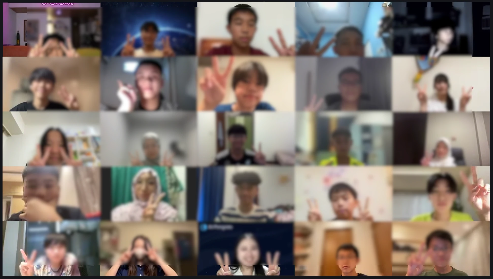
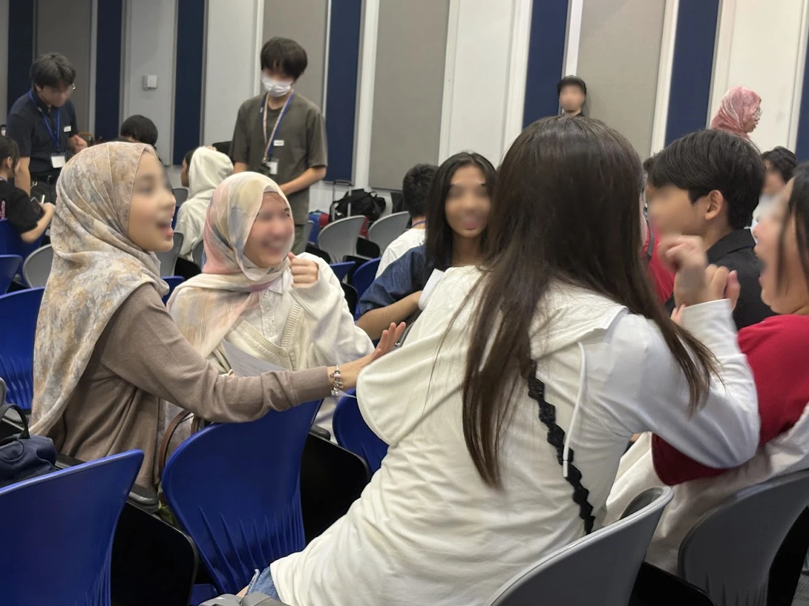

Students from four countries taking part in Global Link Singapore 2026 meet before the event, online and in Singapore
Ahead of Global Link Singapore 2026 (GLS), an Asian research presentation event for junior and senior high school students organized by the JTB Group, we brought together GLS participants from Japan, Indonesia, Cambodia, and Thailand. They first met online on July 18, then met in person on July 31, the day before GLS, at Nanyang Technological University (NTU) in Singapore. At GLS itself, they visited and cheered on one another's research presentations.
This English edition is based on the Japanese version of this case study.
In cooperation with

Japan
GLS participants
28 students
July 31 Singapore
Indonesia, Cambodia, Thailand
GLS participants from four schools
Day 1: 37 students
Day 2: 23 students
- Program
- Pre-GLS International Friendship Program
- Related event
- Global Link Singapore 2026 (organized by the JTB Group)
- From Japan
- Students participating in GLS
- From overseas
- Kharisma Bangsa School, SMA Labschool Kebayoran (Indonesia); CIA FIRST International School Russey Keo Campus (Cambodia); Patumwan Demonstration School (Thailand)
- Dates
- July 2026
Day 1: July 18, 17:30–20:10 (Japan time)
Day 2: July 31, 10:30–12:30 and 14:30–16:30 (Singapore time) - Participants
- Japan: 28 students
Overseas (Indonesia, Cambodia, Thailand): Day 1: 37 students; Day 2: 23 students - Format
- Online + in person (NTU, Singapore)
- Tools
- Zoom (breakout rooms), Padlet
Background
GLS brings together junior and senior high school students from across Asia to present their research. Before the event, we created opportunities for participants from four countries to get to know one another, so that they could arrive at GLS already knowing some familiar faces and enjoy both the exchange and the presentations.
The program had two stages. On Day 1, students met online; on Day 2, the day before GLS, they met in person in Singapore. Meeting again on site with someone they had already talked to helped ease the nerves of a first encounter before the event began.
For the students from Indonesia, Cambodia, and Thailand, the program was a chance to meet participants from other countries ahead of GLS, an international exchange valuable in its own right. Because many of them were presenting research at GLS, the program also helped carry new friendships into the event: students who met on Day 2 promised to visit one another's presentations.
The Japanese participants included many junior high school students attending GLS to observe and prepare for presenting in future years. For them, we prepared simple ways to start conversations with confidence, even across a language barrier.
What we did
To help conversations keep going across languages, the Japanese students were given three simple strategies.
- Show: introduce a favorite thing or club activity with one photo (“Can I show you this?”)
- Ask: when stuck for words, become the listener (“I have a question.” “Why do you like it?” “Could you tell me more (about)?” etc.)
- React: keep the conversation flowing with a short response (“That's cool!” / “Me too!” etc.)
Before the exchange, students posted one photo with a short comment on an online board (Padlet) and used it as their “photo to show” on both Day 1 and Day 2. They also received a conversation phrase sheet to keep at hand.
-
Day 1
Online exchange (July 18)
First, the Japanese students took part in a one-hour orientation in Japanese. They shared the mindset that enthusiasm and a smile matter more than “perfect English,” reviewed the three strategies, and rehearsed with one another, supported by international student staff.
Students from Indonesia, Cambodia, and Thailand then joined for 90 minutes. After a warm-up in which everyone answered the same questions, students split into 22 groups and rotated partner groups in breakout rooms. In each round, a representative shared the group's Padlet screen, and each student introduced their post, followed by questions from both sides. Before each round, groups looked at the next group's posts and discussed what they wanted to ask. The session ended with a group photo.
Afterwards, the Japanese students spent ten minutes sharing brief anonymous reflections on the best moment of the day.
-
Day 2 morning
Preparation (July 31, NTU)
Having arrived at the venue early, the Japanese students spent about an hour preparing for the next day's GLS. They read Japanese summaries of the research by 13 teams from the four overseas schools, checked the original English abstracts in the GLS abstract book, and chose the presentations they wanted to visit and the questions they wanted to ask.
They then reflected on Day 1 in groups and received a mission sheet for the afternoon, the “Three Cs.”
- Connect: start a conversation and make a connection
- Communicate: ask one more question (goal: five people)
- Check-in: promise to visit someone's presentation at GLS (goal: three people)
Instructors demonstrated how to approach people in each afternoon activity, and each student either finished their Padlet post or wrote down the times and places of the presentations they planned to visit.
-
Day 2 afternoon
In-person exchange (July 31, NTU)
Students from the overseas schools joined, mainly the Indonesian students who had met online on Day 1.
- Icebreaker: students moved to corners A–D according to their answers and talked with others who had chosen the same answer (favorite things, research interests, how they spend their weekends, etc.)
- Group exchange: Japanese and overseas students changed partners every ten minutes. In each round, they paired with a student from another country and talked with two people for five minutes each (name → show → ask each other)
- Bingo: students looked for someone from another country who matched each square on a 5×5 card, such as “can play a musical instrument” or “has been to three or more countries,” and collected signatures. Each person could sign up to three squares
- Group exchange (second round)
- Closing: everyone promised to visit one another's poster and booth presentations at GLS the next day, followed by a group photo


-
GLS
From August 1
The connections made online carried over to the venue and brought great energy to the event. At GLS, students cheered on one another's research presentations and celebrated awards together. Seeing these exchanges grow into friendships was a happy outcome for us as well.
What AirPangaea handled
From coordinating with the overseas schools to designing the program, creating materials, and facilitating on the day, AirPangaea handled the following.
- Inviting the overseas schools (Indonesia, Cambodia, Thailand) and coordinating their participation
- Designing the two-stage exchange program (Day 1 and Day 2)
- Creating briefing materials for teachers, and a preparation guide and conversation phrase sheet for students
- Summarizing the research of the four overseas schools (13 teams) in Japanese
- Creating mission sheets and bingo cards
- Setting up Zoom breakout rooms and Padlet, and preparing rotation schedules
- Facilitation and language support on the day (instructors, assistants, and international student staff)
- Designing the post-program survey
On Day 2, because the Japanese students would arrive early, their teachers suggested using the spare time for self-study to prepare for visiting presentations at GLS. In response, we summarized the overseas schools' research in Japanese and restructured the day so that the morning preparation, the afternoon exchange, and the next day's presentation visits formed one continuous flow.
Contact us
If you have any questions about this case study or AirPangaea's programs, please feel free to contact us.
Contact us